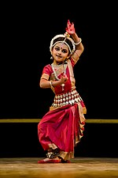

SATTARIYA

Mahapurusha Sankaradeva, a Vaishnava saint and reformer of Assam, introduced Sattriya dance in the 15th century AD. This dance form was preserved in the Sattras or the Vaishnava Maths; therefore, it remained a living tradition. This dance was an artistic way of presenting mythological teachings. Traditionally this dance was performed by the male monks or bhokots. However, today, the practice has changed in many ways. The theme is not just related to mythology, and the performances are not limited to the Sattras. Even women can perform Sattriya dance and on the stage.